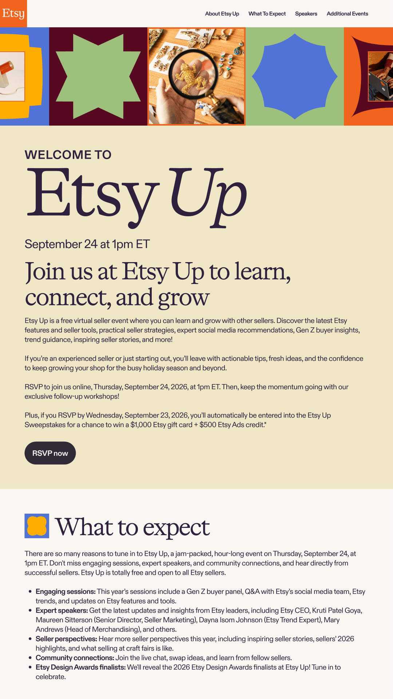
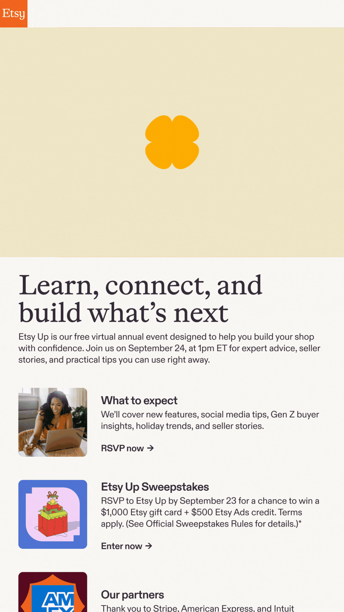
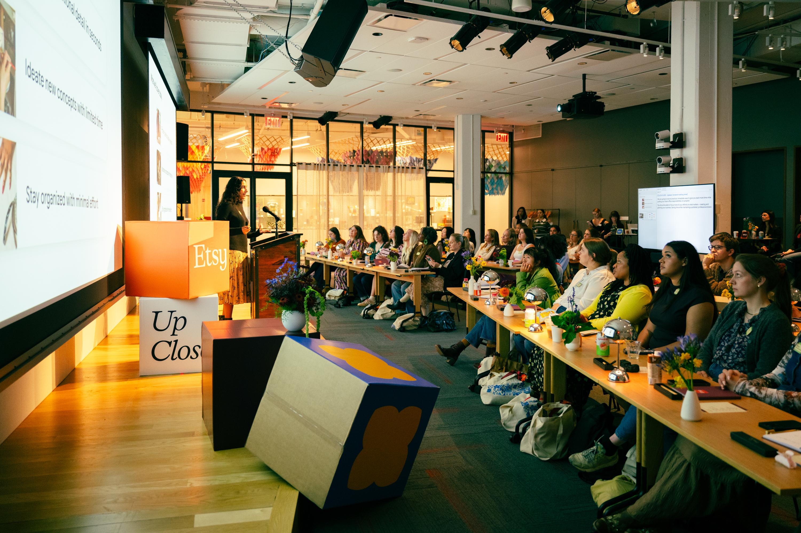
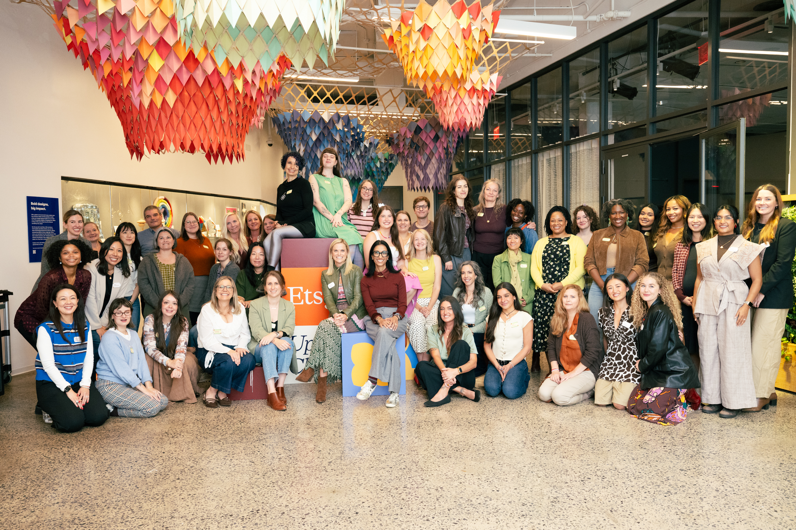
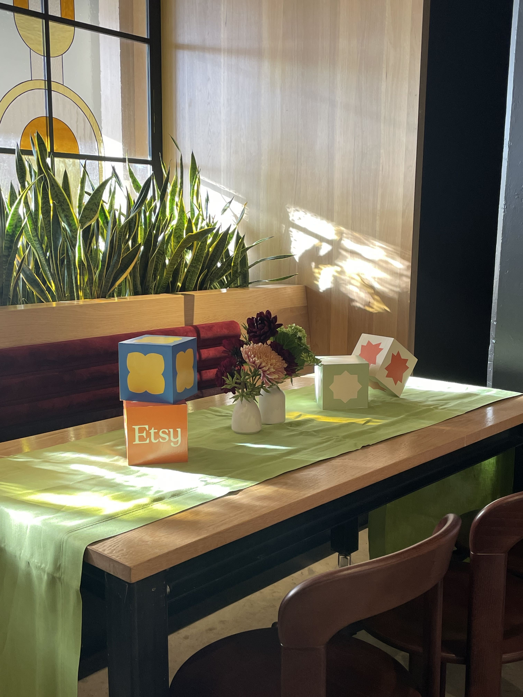
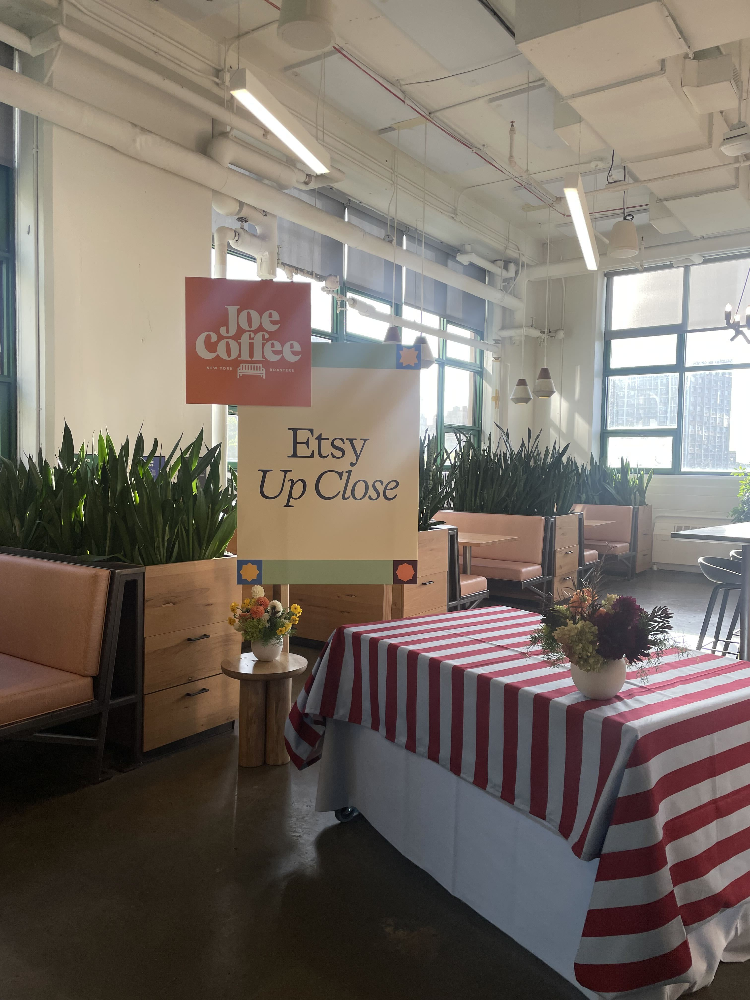

Etsy Up is a free, virtual annual seller education event. Sellers can tune in to hear from Etsy team members and fellow sellers about tips for getting ready for the holiday season with practical guidance, fresh ideas, and stories from across the community. I was responsible for every part of the creative process–including art direction, set design, GFX motion design, go-to-market deliverables, and post-production reviews. The full video can be watched here.
Creative direction and GFX motion graphics
Set design
Go-to-market assets to promote and share resources from the event.


Etsy Up Close is a one-day, in-person event where sellers are invited to Etsy HQ to meet other sellers, attend panels with experts about growing their business, and share their stories. We worked with Rye Workshop to create set pieces to commemorate the event.




Senior Designer - Alex Ling
Project Manager and Producer - Jennifer Hsieh
Marketing and Copy - Katie Song, Taylor Branch, Kristin Hwang, Isabella Diaz
Director - Felix Penzarella
Director (Newly Crafted) - Zack Taylor